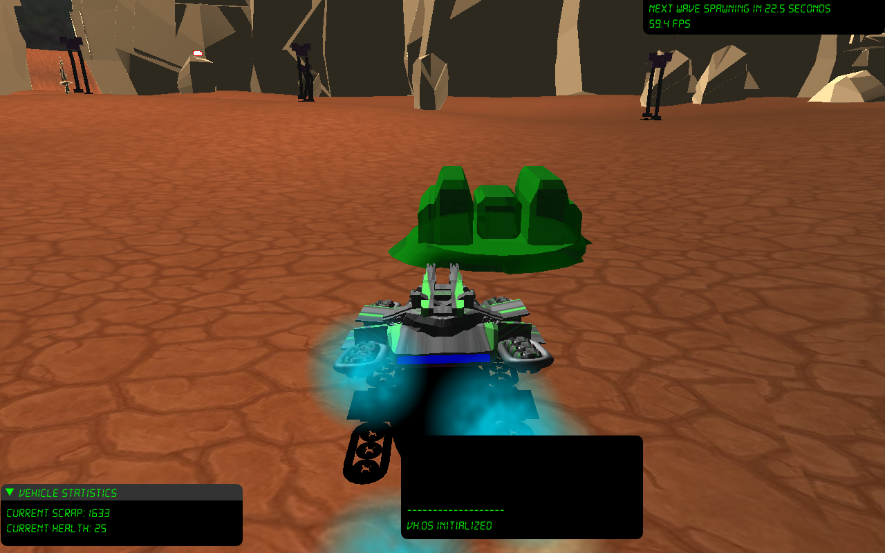
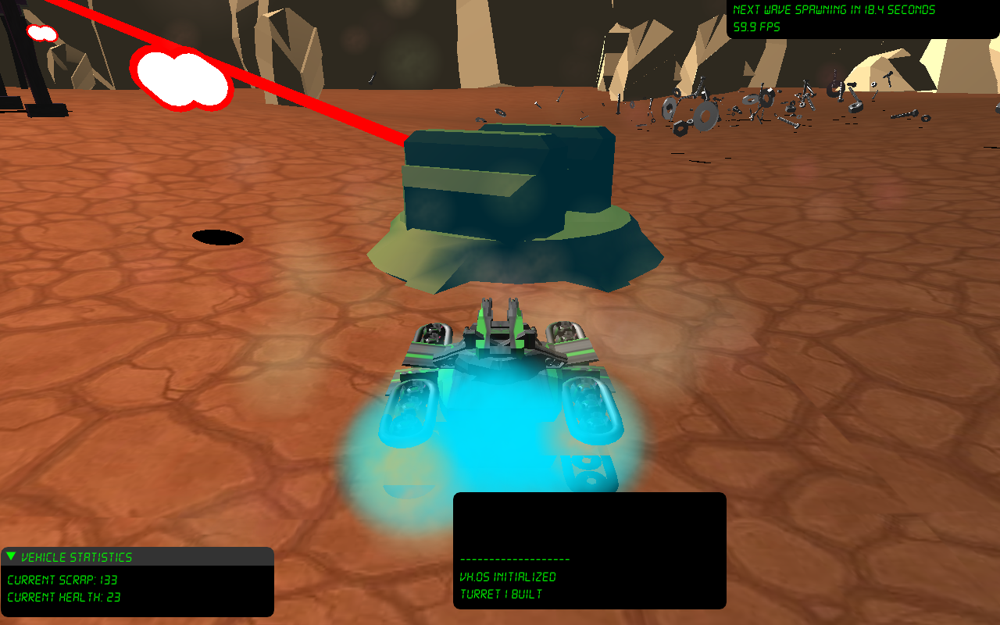

Iron Canyon is a third-person vehicle based shooter with construction elements. The player controls an engineer stranded on an alien planet trying to escape from hordes of enemies. Their trusty service vehicle luckily comes fully equipped with an automatic turret and single-shot laser cannon. Combining their combat and construction skills, they must fend off the enemies by using their service vehice to destroy and create. Once they have enough scrap material left over from the enemies, they can build a rocket big enought to escape the planet.
Most gameplay is centered around moving around the map and shooting enemies. When enemies die, they drop scrap that can be picked up by the player. This scrap is used as currency for building turrets and rocket parts. Enemies can also drop health packs that can be used to heal the player.
When the player has enough scrap for a turret, they can hold B until they find a suitable place to build it. If they have even more, they can go to the rocket pad in the center and build one of the three rocket parts needed to escape. If the player runs out of health before building the entire rocket, they lose.
 